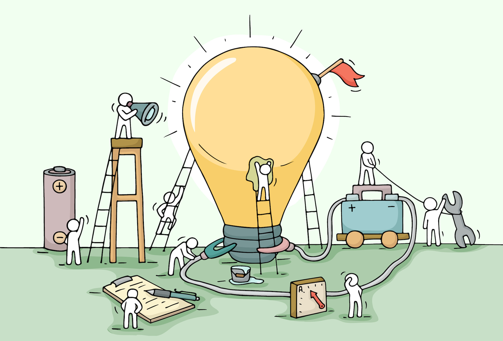
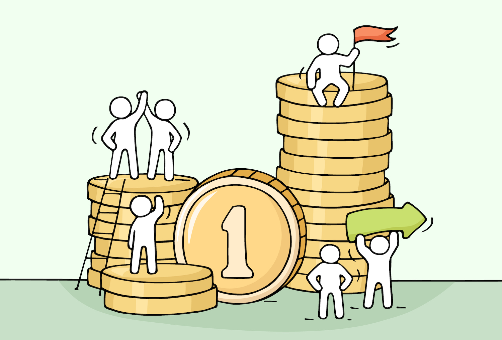
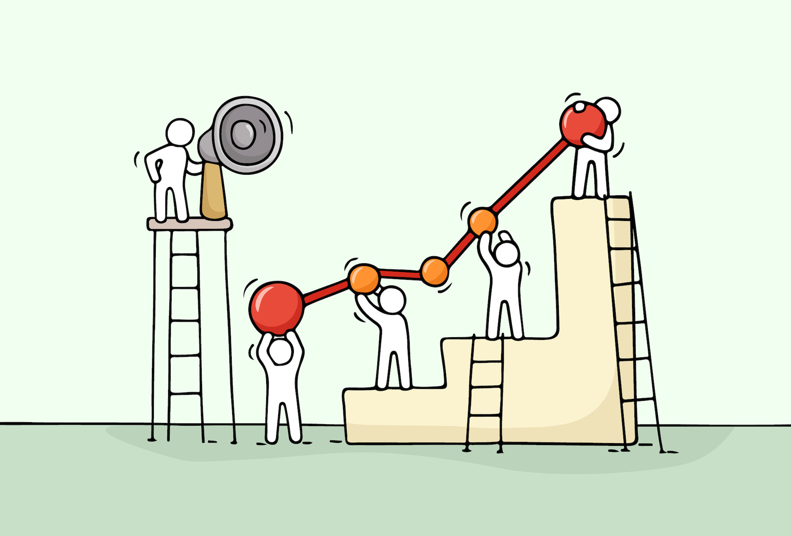

【発表】感謝のプラットフォームを作ります【開発メンバーを募集です】
こんにちは、ゆーだいです。
最近のネット世界は、ちょっと殺伐としています。
なので、平和な世界があったらいいな、と思いました。
そして、先日に下記のツイートをしました。
思いつきですが、感謝のプラットフォームでも作ろうかなと思っています。システム的には、かなり簡単。
匿名にて、感謝メッセージを投稿できて、かつ他人のメッセージも見れるサイト。寝る前とかに投稿すると、幸福度が自制心が高まる仕組み。開発メンバーは、コミュニティから募集しようと思います😌— マナブ@バンコク (@manabubannai) September 5, 2020
匿名にて、感謝メッセージを投稿できて、かつ他人のメッセージも見れるサイト。寝る前とかに投稿すると、幸福度が自制心が高まる仕組み。開発メンバーは、コミュニティから募集しようと思います😌
僕が作りたいものを、作ろうと思いました。
構想や設計などを、ブログにまとめていきます。
感謝のプラットフォームを作ります

コンセプトは、次のとおり。
上記のとおり。
システム的には、簡易SNSみたいな感じです。
しかし、いくつかの成約があるので、下記にまとめます。
投稿は、１日１回まで
このサービスのコンセプトは「ザ・マジック」という本から影響を受けています。

{kind=link}
昔に読んだのですが、超ざっくりに説明すると「１日１回、昨日に出会った人へ、感謝しよう」という感じ。
詳しく知りたい方は、ぜひ本書を読んでみてください。
そして、僕もこれをやっていました。
モレスキンの手帳を買いました😌
基本的には「デジタルのみで生きていく」という生き方ですが、こちらの手帳は秘密のノートにします。具体的な使い道は決めているのですが、しばし秘密ににします。モレスキン手帳を使いつつ、人生を豊かにしていきます pic.twitter.com/0mO6dg2jP8— マナブ@バンコク (@manabubannai) June 24, 2019
上記のとおりで、この手帳に「感謝のメッセージ」を書いたりしていました。
ちょっとスピリチュアルでキモいかもですが、わりと効果ありだと思います。
体感でも効果を感じますし、科学的にも実証されています。
感謝のパワーとは
結論は、下記のとおりです。
感謝のパワーとは😌
・幸福度が高まる
・自制心が高まる
・生産性が高まる
・不安が減少する
・睡眠の質が向上
・ストレスが減るこういった効果があると、言われています。ここを実行できる、Webサービスを作りたいと思っています。メリットしかないですね
— マナブ@バンコク (@manabubannai) September 7, 2020
控えめにいって、メリットしかないですよね。
ちょっと気分が落ち込んでいても、ふとしかキッカケで笑顔になると、心が晴れたりします。
哲学者アランの言葉には「幸福だから笑うのではない、笑うから幸福なのだ」とあります。これ同意です。
ちょっと話がズレていますが、要するに「感謝しつつ、ちょっとほっこりできるサービス」だと、素晴らしいですよね。
利用料は、月額390円です
スイマセン、料金を取ります。
最初は「無料でもいいかな」と思ったのですが、そうなると僕の財布を削っていく作業になります。それでもいいですが、持続性が微妙なんですよね。
僕が作るプラットフォームでは、広告は入れませんので、有料にしました。
収益の50%は、寄付します
月額390円（サンキュー価格）をいただきつつ、集まったお金は「慈善団体」に寄付しようと思っています。

50%は寄付で、残り50%は運営・開発費です。
{kind=link}
なお、寄付先は「プラットフォームの参加者にて、話し合い」とかを考えています。
感謝のプラットフォームから、寄付が生まれ、良い循環かなと思っています。
サービス名は「ギフト村 (仮)」です
ちょっと迷い中なのですが、、、ギフト村でもいいかなと思っています。
- ギフト① ⇨ 参加者から、感謝する相手へ
- ギフト② ⇨ 参加者から、慈善団体への寄付
- ギフト③ ⇨ 慈善団体から、寄付先の人々へ
こういった感じで、参加者の「390円」というお金が、循環していくイメージです。
こういったサービスは、僕が欲しかったので、自分で作ることにしました。
なお、記事後半では「開発メンバーの募集」について解説します。
開発メンバーを、３名ほど募集します

１つだけ注意点があり、今回の採用は「コミュニティメンバーの優先」で考えています。
{kind=link}
なので、同じスキルで２名の応募があった場合、思考停止してコミュニティメンバーを選びます。ご了承くださいませ。
ポジションは、３つあります
次のとおりです。
- バックエンドエンジニア
- フロントエンドエンジニア
- Webデザイナー
上記のとおりで、想定する作業は次のとおり。
バックエンドエンジニア
システム面の開発をお願いします。具体的には、ざっくり下記です。
- 会員登録機能（DB：名前、写真、バッジ、詳細）
- パスワード認証機能（パスワード入力でクッキー付与）
- メッセージの投稿機能（掲示板と同じ）
- 投稿へのライク機能（ライクした人は表示、ライク数は非表示）
- 投稿の制限機能（１日１回まで）
上記のとおりです。
言語はなんでもいいですが、僕はPHPしか分からないので、できればPHPを希望です。
Laravelとかで、OKかなと思います。
フロントエンドエンジニア
コーディングをお願いします。
- HTML／CSS
- 基礎的なJS or jQuery or Node.js
- UI/UXに対する基礎的な理解
上記のとおりです。
なお、ここの部分は、僕がディレクションしていきます。
特にUI/UXが大切だと思っているので、コードを書くだけじゃなく、使いやすいサイトを作るのが好きな人、を募集です。
Webデザイナー
デザインをお願いします。
なお、コーディングができるデザイナーさんなら、フロントエンドとのセット受注でもOKです。
- ロゴデザイン
- サイトデザイン
依頼するのは、上記のとおり。
ロゴからコンセプトを決めていき、作るのがいいかなと思っています。
なお、ロゴ作成は「ランサーズに投げて、コンペで作成」とかでもOKです。
ぶっちゃけ、ロゴとかって、数も大切だと思っており、このあたりもお任せします。
必要に応じて予算を出します。
» 応募はこちらからお願いします
開発予算は「100万円」くらいです
100万もかからないと思っていますが、下記のイメージで想定しています。
- バックエンド：20〜30万（稼働：月20〜35時間）
- フロントエンド：20〜30万（稼働：月20〜35時間）
- デザイン：20〜30万（稼働：月20〜35時間）
すごい適当な見積もりですが、ページ数とかを明確にしつつ、また詳しく見積もりしたいと思っています。
時給は１万を超えるかなと、思います。
なお、ポートフォリオとしての実績公開も、もちろんOKです。
応募条件とは
基本的に「誰でもOK」です。
ただ、応募の際には「下記の準備」をお願いします。
- ポートフォリオ
- 実務経験の年数
- トータル学習期間
- サービスへの提案
上記のとおり。
最重要は「サービスへの提案部分」です。
たぶんベンチャー企業へ就職するとかでも、同じように見られると思います。
今回のサービスに対して、どういった開発ができるかを、提案してください。
例：バックエンドエンジニアの場合
例えば、下記のとおり。
こういった提案をいただけますと、とても助かります。
フロントエンドエンジニアでも、デザイナーでも、同じ感じを希望します。
» 応募はこちらからお願いします
開発の裏側は、コミュニティにて
というわけで、今回は以上です。
全体ディレクションは僕がやろうと思っています。
あと、ミーティングとかはありません。
すべてチャット完結で作っていきます。
チャットの方が効率的ですからね。
その際には、効率化ツールなども使いつつ、進めていきます。
プロジェクトの裏側だったり、開発の進め方、各種ツールなどを見てみたい方は、ぜひコミュニティをどうぞ。
月500円で中を覗けますので、コスパ良いはずです。
それでは、また進んだら報告します😌
» 【発表】YouTubeで有料コミュニティを始めます【理由・価格・内容】
P.S：普段の僕は「Twitter」を軸に発信しています。また最近は「Webマーケ教材」の作成に注力しており、ネットで稼ぐスキルを学べます。ブログの更新通知はtwitterからお知らせします。